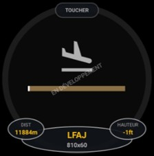

🛬
Toucher de piste
Aide latérale à l'approche : point de toucher projeté sur la piste
ANLTCH · analogique

Possibilités
- Vue latérale de l'approche : bande de piste (seuil marqué), icône avion et point de toucher projeté (triangle sur la piste).
- Couleur selon la qualité d'approche : vert (zone de toucher correcte), orange (trop long), rouge (trop court).
- Trois lobes : DIST (distance au seuil), ICAO (terrain), HAUTEUR (hauteur sol).
Gestes
– Appui long : choisir / verrouiller le terrain d'approche (liste des terrains à moins de 40 nm ; bouton « Auto » pour revenir à la détection automatique).
·· Double-tap : —
Note
- Détection automatique du terrain proche ; hauteur sol via l'élévation du terrain (SRTM). Longueur de piste issue des cartes VAC si disponible.
- Nécessite une position GPS. En développement — indicatif, non certifié.